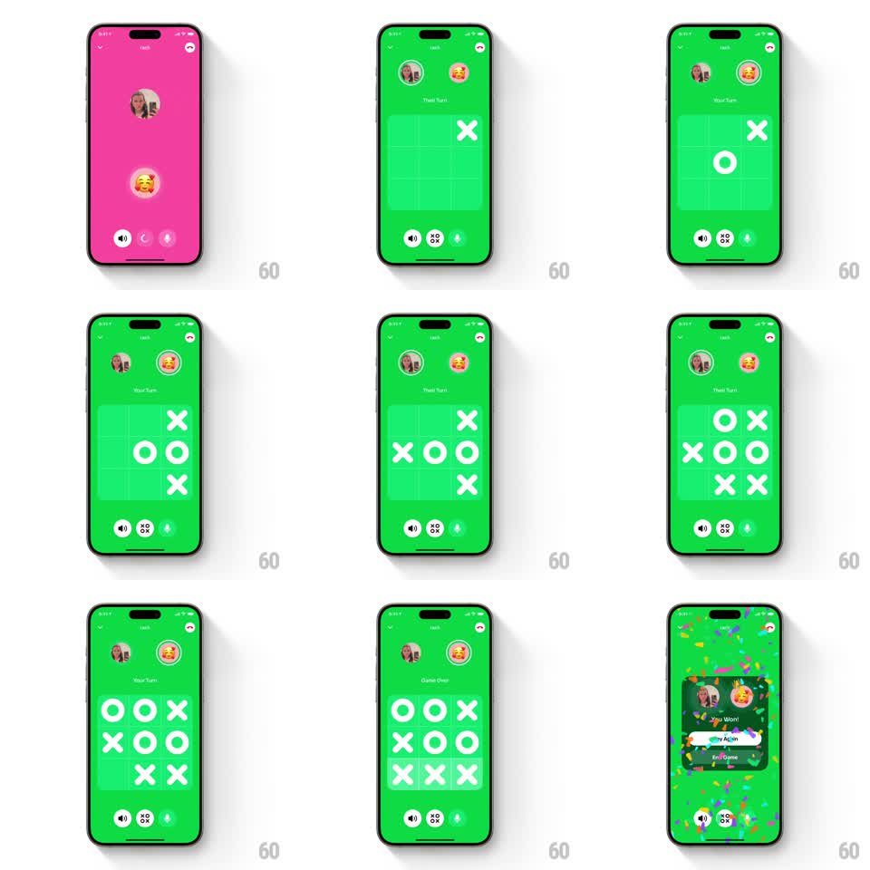

Media
Frame-by-frame

Rebuild this animation 1:1: Honk's tic-tac-toe win - the final move lands, the game-over modal bounces in with both avatars and a "You Won!" headline, and confetti rains over the board behind it.

Rebuild this animation 1:1: Honk's tic-tac-toe win - the final move lands, the game-over modal bounces in with both avatars and a "You Won!" headline, and confetti rains over the board behind it. ## Integration Integration: stack-agnostic spec - springs given as stiffness/damping, timed motions as duration + curve; map every value to your framework and animation library of choice. ## Scene Green game screen: two player avatars at top with "Your Turn"/"Their Turn" subtitles, a 3x3 grid where bold white X and O strokes appear move by move, and a bottom toolbar (speaker, dice, mic). At game over, a dark rounded modal centers with both avatars, "You Won!", a white "Play Again" button and an "End Game" link, under falling confetti. ## Motion spec Pattern: bouncy game-over modal with confetti rain. - Each move: the X or O draws itself (stroke draws over 250ms, ease-out) in the tapped cell; the turn subtitle under each avatar swaps (slide-fade, 200ms). - Final move: the winning line of three pulses (cells flash opacity 0.5 -> 1 twice, 400ms) and the header switches to "Game Over" (fade, 200ms). - 400ms later the modal card enters: scale 0.7 -> 1.05 -> 1 (spring ~300/15, 400ms) with fade, the board dimming behind it. - Confetti: ~80 pieces (rects and circles, 5-10pt, multicolor) spawn along the top edge, falling with sway (+-30pt sine at 1-2Hz), tumbling rotation, at varied speeds (300-600pt/s), fading near the bottom; a second gentle wave follows the burst. - Inside the modal, the winner's avatar gets a subtle glow ring (fade in, 300ms). ## Calibration - The modal entrance is the big beat - bouncy enough to feel celebratory, one overshoot only. - Confetti falls behind the modal but over the board: three clear depth layers. ## Reduced motion Modal fades in (250ms); six confetti pieces drift down once. ## Don't miss - The X/O glyphs are thick rounded strokes drawn live, not instant stamps. - Keep the board visible (dimmed) behind the modal - context of the winning grid matters.